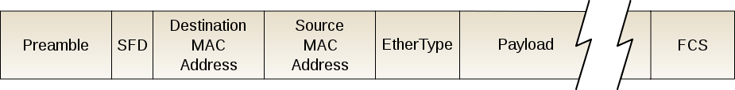
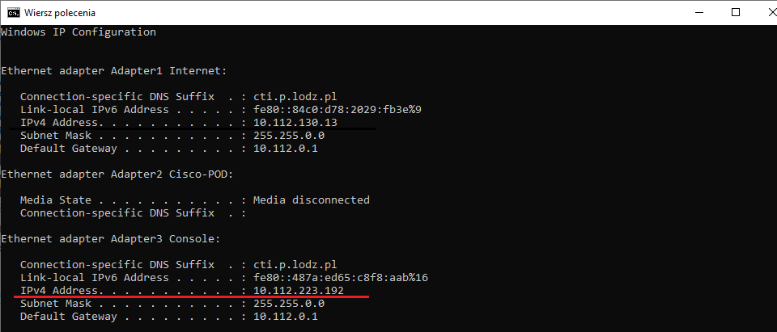
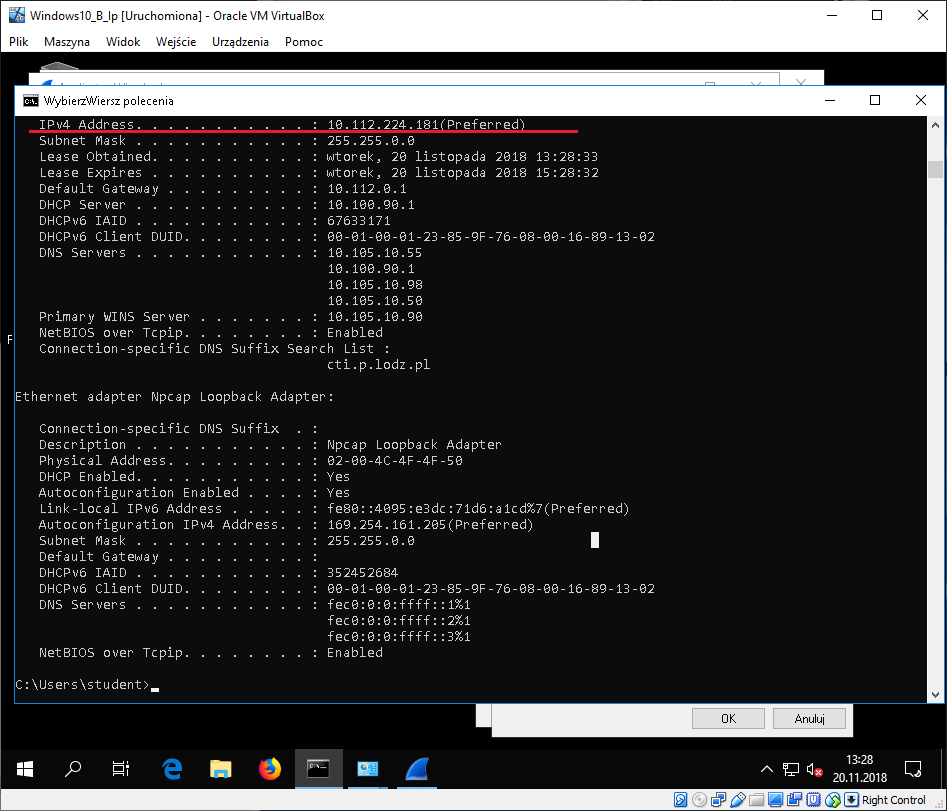
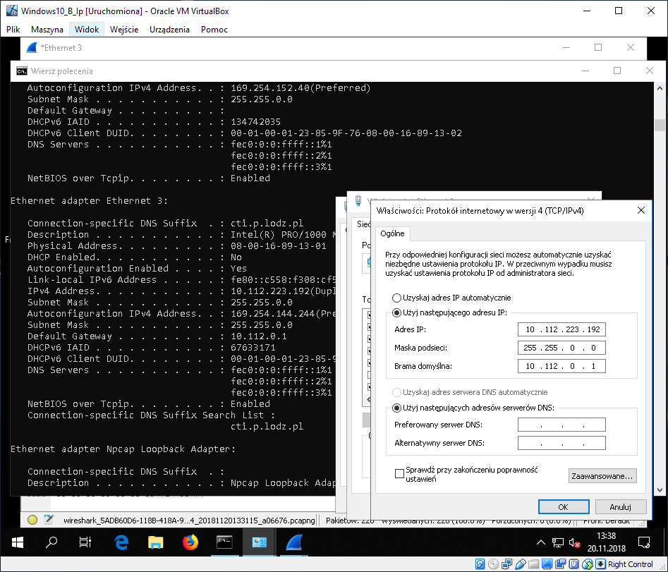
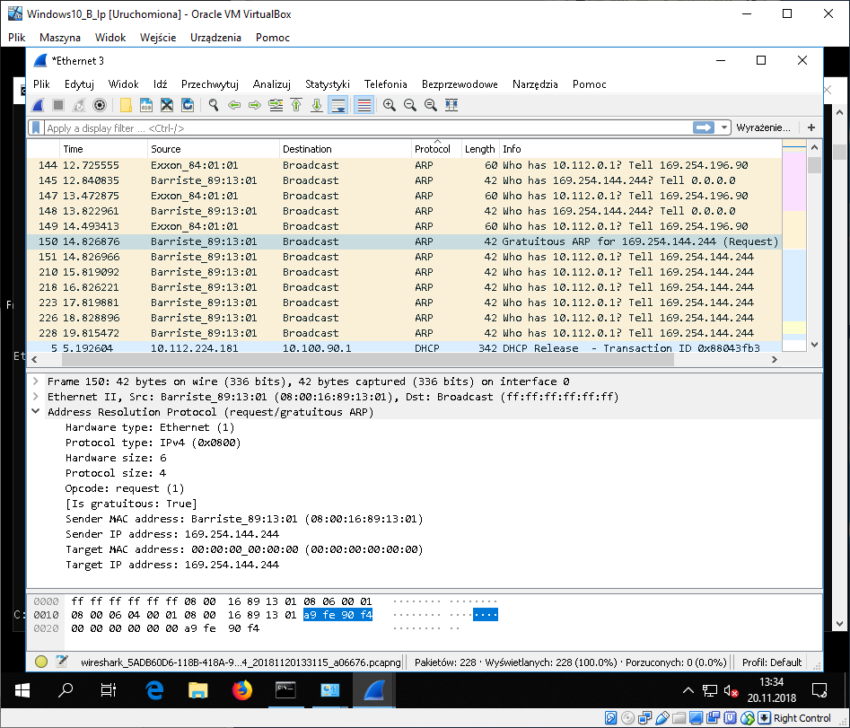
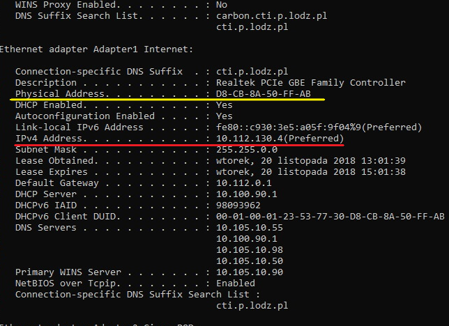
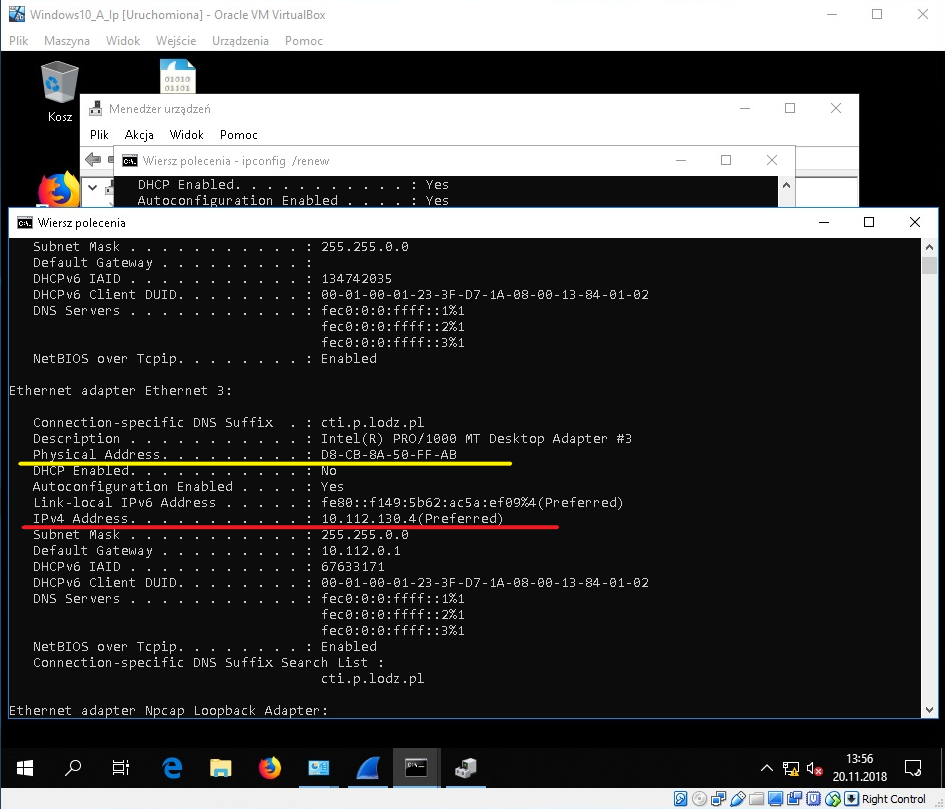

Theoretical part
Ethernet standards
-
Ethernet (early implementations) | 10 Mbps bandwith
-
10BASE5 (Thicknet)
Used thick coaxial cable with bus topology. Its maximum segment length was 500 m with the use of at most 4 repeaters. Bridges could be used to extend the nerwork.
-
10BASE2 (Thinnet)
Used thin coaxial cable with bus topology. Its maximum segment length was 185 m with at most 4 repeaters. Bridges could be used to extend the network.
-
10BASE-T (UTP)
Used UTP Cat 3 or UTP Cat 5 with tree topology. Its maximum segemnt length was 100 m with the use of at most 4 hubs. Switches could be used to extend the network.
-
10BASE-FL (Fiber)
Used Singlemode or Multimode Fiber with tree topology. Its maximum segment length was 2000 m
-
-
Fast Ethernet | 100 Mbps bandwith
-
100BASE-TX
Uses UTP Cat 5e. Its maximum segment length is 100 m.
-
100BASE-FX | single/multi mode
Uses single or multi mode fiber. Maximum segment length for single mode is 20 km and for multi mode it is 2 km.
-
-
Gigabit Ethernet | 1 Gbps bandwith
-
1000BASE-T
Uses Unshielded Twisted Pair Cat 5e/6. Its maximum segment length is 100 m.
-
1000BASE-Sx
Uses multi mode fiber. Its maximum segment length is 275 m.
-
1000BASE-LX | multi mode fiber
Uses multi mode fiber. Its maximum segmenth length is 512 m.
-
1000BASE-LX | single mode fiber
Uses single mode fiber. Its maximum length is 20 km.
-
1000BASE-LH
Uses single mode fiber. Its maximum length is 80 km.
-
-
10 Gigabit Ethernet | 10 Gbps bandwith
-
10GBASE-LR | single mode fiber
Uses single mode fiber. Its maximum segment length is 10 km.
-
10GBASE-ER | single mode fiber
Uses single mode fiber. Its maximum length is 40 km.
-
Ethernet frame
In computer networking, an Ethernet frame is a data link layer protocol data unit that uses the underlying Ethernet physical layer transport mechanisms. In other words, a data unit on an Ethernet link transports an Ethernet frame as its payload.
-
Preamble
An Ethernet packet starts with a seven-octet preamble and one-octet start frame delimiter (SFD). The preamble consists of a 56-bit (seven-byte) pattern of alternating 1 and 0 bits, allowing devices on the network to easily synchronize their receiver clocks, providing bit-level synchronization.
-
SFD
It provides byte-level synchronization and to mark a new incoming frame.The SFD is the eight-bit (one-byte) value that marks the end of the preamble, which is the first field of an Ethernet packet, and indicates the beginning of the Ethernet frame. The SFD is designed to break the bit pattern of the preamble and signal the start of the actual frame.
-
Adresses
Consist of 6 bytes. Frame is received by all adapters on a LAN and dropped if address does not match.
-
Ether
It is two octets long and it can be used for two different purposes. Values of 1500 and below mean that it is used to indicate the size of the payload in octets, while values of 1536 and above indicate that it is used as an EtherType, to indicate which protocol is encapsulated in the payload of the frame. When used as EtherType, the length of the frame is determined by the location of the interpacket gap and valid frame check sequence (FCS).
-
Payload
The minimum payload is 42 octets when an 802.1Q tag is present and 46 octets when absent. When the actual payload is less, padding bytes are added accordingly. The maximum payload is 1500 octets. Non-standard jumbo frames allow for larger maximum payload size.
-
Frame Check Sequence
The frame check sequence (FCS) is a four-octet cyclic redundancy check (CRC) that allows detection of corrupted data within the entire frame as received on the receiver side. The FCS value is computed as a function of the protected MAC frame fields: source and destination address, length/type field, MAC client data and padding (that is, all fields except the FCS).
MAC address and broadcasting
A media access control address (MAC address) of a device is a unique identifier assigned to a network interface controller (NIC) for communications at the data link layer of a network segment. MAC addresses are used as a network address for most IEEE 802 network technologies, including Ethernet and Wi-Fi. In this context, MAC addresses are used in the medium access control protocol sublayer.
Broadcasting refers to sending traffic to all nodes on a network. Layer 2 broadcast traffic stays within a local area network (LAN) boundary; known as the broadcast domain.
Router, switch and hub
-
Router
The router forwards data packets along networks. It is connected to at least two networks, commonly two LANs or WANs or a LAN and its ISP's network. Routers are located at gateways, the places where two or more networks connect. Routers use headers and forwarding tables to determine the best path for forwarding the packets, and they use protocols to communicate with each other and configure the best route between any two hosts.
-
Switch
In networks the switch is the device that filters and forwards packets between LAN segments. Switches operate at the data link layer (layer 2) and sometimes the network layer (layer 3) of the OSI Reference Model and therefore support any packet protocol. LANs that use switches to join segments are called switched LANs or, in the case of Ethernet networks, switched Ethernet LANs.
-
Hub
A hub is a common connection point for devices in a network. Hubs connect segments of a LAN. It contains multiple ports so when a packet arrives at one port, it is copied to the other ports so that all segments of the LAN can see all packets.
Differences
In a hub, a frame is passed along or "broadcast" to every one of its ports. It doesn't matter that the frame is only destined for one port. The hub has no way of distinguishing which port a frame should be sent to. Passing it along to every port ensures that it will reach its intended destination. This places a lot of traffic on the network and can lead to poor network response times.
A switch, however, keeps a record of the MAC addresses of all the devices connected to it. With this information, a switch can identify which system is sitting on which port. So when a frame is received, it knows exactly which port to send it to, without significantly increasing network response times. And, unlike a hub, a 10/100Mbps switch will allocate a full 10/100Mbps to each of its ports. So regardless of the number of PCs transmitting, users will always have access to the maximum amount of bandwidth. It's for these reasons a switch is considered to be a much better choice than a hub.
Routers are completely different devices. Where a hub or switch is concerned with transmitting frames, a router's job, as its name implies, is to route packets to other networks until that packet ultimately reaches its destination. One of the key features of a packet is that it not only contains data, but the destination address of where it's going.
CSMA/CD
CSMA/CD (carrier-sense multiple access with collision detection) is a media access control method used most notably in early Ethernet technology for local area networking. It uses carrier-sensing to defer transmissions until no other stations are transmitting. This is used in combination with collision detection in which a transmitting station detects collisions by sensing transmissions from other stations while it is transmitting a frame. When this collision condition is detected, the station stops transmitting that frame, transmits a jam signal, and then waits for a random time interval before trying to resend the frame.
Collision
In a half duplex Ethernet network, a collision is the result of two devices on the same Ethernet network attempting to transmit data at exactly the same time. The network detects the "collision" of the two transmitted packets and discards them both. Collisions are a natural occurrence on Ethernets.
Half duplex
In a half-duplex system, both parties can communicate with each other, but not simultaneously; the communication is one direction at a time. An example of a half-duplex device is a walkie-talkie two-way radio that has a "push-to-talk" button; when the local user wants to speak to the remote person they push this button, which turns on the transmitter but turns off the receiver, so they cannot hear the remote person. To listen to the other person they release the button, which turns on the receiver but turns off the transmitter.
Full duplex
In a full-duplex system, both parties can communicate with each other simultaneously. An example of a full-duplex device is a telephone; the parties at both ends of a call can speak and be heard by the other party simultaneously. The earphone reproduces the speech of the remote party as the microphone transmits the speech of the local party, because there is a two-way communication channel between them, or more strictly speaking, because there are two communication channels between them.
ARP Request
The Address Resolution Protocol (ARP) is a communication protocol used for discovering the link layer address, such as a MAC address, associated with a given internet layer address, typically an IPv4 address. This mapping is a critical function in the Internet protocol suite.
ARP request - enquire for physical adress of host. ARP sends request to all hosts belonging to the same network. Request contains logcial adress of target host and physical adress of host sending this request. The answer is only sent by target host and it has both logical and physical adress of it. Sender saves this information in so-called ARP table and links logical address of target host with its physical adress.
Detecting doubled ip adresse - when two hosts on the same link attempt to use the same IPv4 address at the same time (except in rare special cases where this has been arranged by prior coordination), problems ensue for one or both hosts. ARP provides an easy way for a host to detect this kind of misconfiguration and report it to the user.
BOOTP
The Bootstrap Protocol (BOOTP) is a computer networking protocol used in Internet Protocol networks to automatically assign an IP address to network devices from a configuration server. The BOOTP was originally defined in RFC 951.
DHCP
The Dynamic Host Configuration Protocol (DHCP) is a network management protocol used on UDP/IP networks whereby a DHCP server dynamically assigns an IP address and other network configuration parameters to each device on a network so they can communicate with other IP networks. A DHCP server enables computers to request IP addresses and networking parameters automatically from the Internet service provider (ISP), reducing the need for a network administrator or a user to manually assign IP addresses to all network devices. In the absence of a DHCP server, a computer or other device on the network needs to be manually assigned an IP address, or to assign itself an APIPA address, which will not enable it to communicate outside its local subnet.
VLANs
A virtual LAN (VLAN) is any broadcast domain that is partitioned and isolated in a computer network at the data link layer (OSI layer 2). LAN is the abbreviation for local area network and in this context virtual refers to a physical object recreated and altered by additional logic. VLANs work by applying tags to network packets and handling these tags in networking systems – creating the appearance and functionality of network traffic that is physically on a single network but acts as if it is split between separate networks. In this way, VLANs can keep network applications separate despite being connected to the same physical network, and without requiring multiple sets of cabling and networking devices to be deployed.
VLANs allow network administrators to group hosts together even if the hosts are not directly connected to the same network switch. Because VLAN membership can be configured through software, this can greatly simplify network design and deployment. Without VLANs, grouping hosts according to their resource needs necessitates the labor of relocating nodes or rewiring data links. VLANs allow networks and devices that must be kept separate to share the same physical cabling without interacting, improving simplicity, security, traffic management, or economy.
Practical part
-
Find the MAC address of our computer:
Type in:
ipconfig /allThe MAC address is the physical address underlined in yellow. We can also see the Default Gateway IP (in red).

Find the default gateway using Wireshark:
Because we know the Default Gateway's IP address, we can ping it and find its MAC address through Wireshark. Use:
ping 192.168.0.1And apply filters in Wireshark:
ip.proto == ICMPNow, upon examining the ECHO Request packet we can see the Dst (destination) MAC address:

-
To see our Network Adapter's manufactuter:
Type in the following into cmd:
wmic nic get AdapterType, Name, MACAddress, ManufacturerIt returns the information about adapter types, names of the adapters, their mac adresses and manufacturers.
We could have only printed the Manufacturer, but it would not tell us much about which adapters are we actually using.
The actual manufacturer of our Network Adapter is underlined with red.
-
Flushing the ARP cache:
To accomplish this task, we had to run CMD as an Administrator.First, we check the initial state of the cache to later verify if the flush worked:
arp -adisplays the current ARP entries.
netsh interface ip delete arpcacheflushes the cache
arp -ais used to again check the entries after the flush.

Here we can see that some entries were deleted, so the flush was correct.
-
Setting the same IP address on two different hosts in the lab and detecting it using arp request
First, we check the IP of one of the machines in the lab:
Initial IP address on our Virtual Machine:
Changing the IP address on the VM to the one on the physical host:
Before clicking OK, we turn on Capturing in Wireshark and then, we look for the ARP packets.
We notice "Gratituous ARP for 169.254.144.244", which appeared because of IP spoofing which lead to IP address duplication.
-
Saving packets used to obtain the IP Address with DHCP using Wireshark
First we have to release our current IP address using
ipconfig /releaseThen to obtain an IP address we type in:
ipconfig /renewThe result in Wireshark (applying the filter bootp - DHCP uses the Bootstrap Protocol):

The following packets of the DHCP protocol are collected by Wireshark:
-
Discover
First the client sends a DHCPDISCOVER message to every server and "asks" to keep its previous IP address.
Notice, that our IP address is 0.0.0.0 at the moment. -
Offer
The DHCP server sends a message with a potential IP address of the client.
-
Request
The client collects the first IP address obtained from all DHCP servers that could send a message and broadcasts a DHCPREQUEST message. It may contain a query for other parameters.
-
ACK (Acknowledge)
Upon receiving the DHCPREQUEST message, the server may store the IP address and send a DHCPACK message. If the address specified in DHCPOFFER cannot be provided anymore, the server sends a DHCPNAK meessage.
-
-
Releasing and renewing the IP
First we release our current IP address using
ipconfig /release
Then, to connect back to the Internet we need to obtain an IP address, therefore we type in:
ipconfig /renew
-
Changing MAC address of a computer in the lab to the same as the MAC address of the other computer in the lab and verifying the IP address obtained
First we check the MAC and IP of our machine:
Then, after changing the MAC address of the VM to the one of the first machine and running:
ipconfig /renewwe obtained the following result:
And as we can see, the IP which was given to the VM after MAC spoofing is the same as the one on the host.